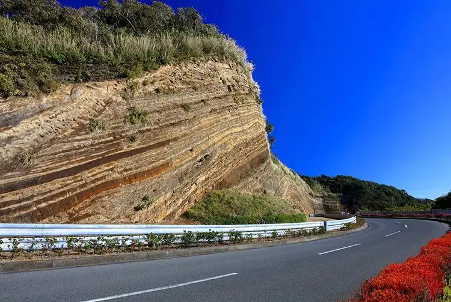

Oshima, Tokyo: things to do, food and stays
Oshima · Tokyo
Oshima
Highlighted on the Tokyo map.

Sights
Dining
Sushi Ko
寿し光

Seafood restaurant in Oshima, Tokyo.
Shima Kyo Bonten
島京梵天

Cafe in Oshima, Tokyo.
Shima no Ice cream Ya Toriton
島のアイスクリーム屋 トリトン

Sweets and bakery shop in Oshima, Tokyo.
Minato Zushi
港鮨

Seafood restaurant in Oshima, Tokyo.
Buratto House
ぶらっとハウス

Sweets and bakery shop in Oshima, Tokyo.
Zako ya Kiyomaru
雑魚や紀洋丸

Seafood restaurant in Oshima, Tokyo.
Ichimine
一峰

Seafood restaurant in Oshima, Tokyo.
STARFISH AND COFFEE

Cafe in Oshima, Tokyo.
Ukai Shoten
鵜飼商店

Meat restaurant in Oshima, Tokyo.
Sushi Yoho Maru
鮨 陽宝丸

Seafood restaurant in Oshima, Tokyo.
Ramen Yorimichi Izu Oshima
らぁ麺 よりみち 伊豆大島

Noodle restaurant in Oshima, Tokyo.
MOMOMOMO
観光喫茶もももも

Cafe in Oshima, Tokyo.
Umi Sachi
魚味幸

Izakaya or bar in Oshima, Tokyo.
Kaachan
かあちゃん

Seafood restaurant in Oshima, Tokyo.
Oozeki Zushi
大関寿司

Seafood restaurant in Oshima, Tokyo.
Kissa Sakaba Nabekichi
喫茶酒場 なべきち

Cafe in Oshima, Tokyo.
Oshima Onsen Hotel
大島温泉ホテル

Restaurant in Oshima, Tokyo.
Sakana Ya
肴や

Izakaya or bar in Oshima, Tokyo.
Shiki no Aji Mantate
四季の味 まんたて

Seafood restaurant in Oshima, Tokyo.
Book Tea Bed Izuooshima
ブッティーベッド イズオオシマ

Restaurant in Oshima, Tokyo.
Hotel Akamon
ホテル赤門

Restaurant in Oshima, Tokyo.
Chalon
シャロン洋菓子店

Sweets and bakery shop in Oshima, Tokyo.
Izakaya Shima
居酒屋 島

Izakaya or bar in Oshima, Tokyo.
Hotel Shiraiwa
ホテル白岩

Restaurant in Oshima, Tokyo.
Umi no Pan Yasan
海のパン屋さん

Sweets and bakery shop in Oshima, Tokyo.
Izanami
いざなみ

Seafood restaurant in Oshima, Tokyo.
restaurant&bar waka

Cafe in Oshima, Tokyo.
Nantoukan
南島館

Seafood restaurant in Oshima, Tokyo.
Curry House Kirikiri
カレーハウス木里吉里

European restaurant in Oshima, Tokyo.
Men's CLUB Shuchinikurin Izu ooshima ten
麺'sCLUB 酒池肉林 伊豆大島店

Noodle restaurant in Oshima, Tokyo.
Zen Kashiya
善菓子屋

Sweets and bakery shop in Oshima, Tokyo.
Green Tights Coffee

Cafe in Oshima, Tokyo.
mashio

Restaurant in Oshima, Tokyo.
Nashiro Utano Chaya
名代 歌乃茶屋

Noodle restaurant in Oshima, Tokyo.
Island Center Gojinka Onsen
愛らんどセンター 御神火温泉

Japanese restaurant in Oshima, Tokyo.
Men Dokoro Shimaenaga
麺処 しまえなが

Noodle restaurant in Oshima, Tokyo.
Stay
Izu Oshima Hotel & Resort Mashio
伊豆大島 ホテル＆リゾート マシオ

伊豆大島 ホテル＆リゾート マシオ is a resort hotel in Oshima, Tokyo.
Resort Villa Miko
Resort villa miko

Resort Villa Miko is a resort hotel in Oshima, Tokyo.